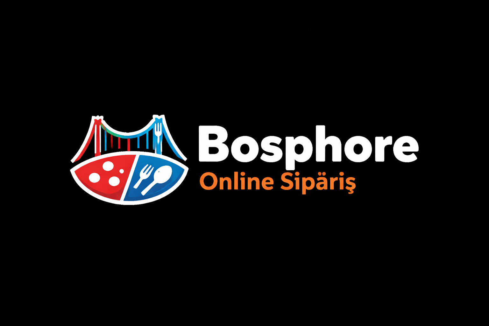

<ion-header [translucent]="true" class="bosp-header">
  <ion-toolbar color="primary" class="main-toolbar">

    <ion-buttons slot="start">
      <ion-button (click)="toggleMenu()">
        <ion-icon slot="icon-only" name="menu-outline"></ion-icon>
      </ion-button>
    </ion-buttons>
<i class="fas fa-spinner fa-spin"></i>
    <ion-title class="logo-title">
      
    </ion-title>
 
    <ion-buttons slot="end">
      <ion-button (click)="openSearch()">
        <ion-icon slot="icon-only" name="search-outline"></ion-icon>
      </ion-button>

      <ion-button (click)="openCart()" class="cart-btn">
        <ion-icon slot="icon-only" name="cart-outline"></ion-icon>
        <ion-badge color="danger" *ngIf="cartItemCount() > 0">
          {{ cartItemCount() }}
        </ion-badge>
      </ion-button>

      <ion-button (click)="openAccount()">
        <ion-icon slot="icon-only" name="person-outline"></ion-icon>
      </ion-button>
    </ion-buttons>

  </ion-toolbar>
</ion-header>
